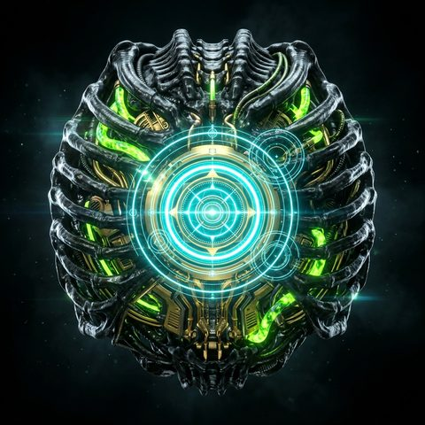

Repository files
Open a folder to explore. Open a file to read. Lines show what belongs where.
Loading repository…
Folder: explore File: previewDrag to turn · Ctrl/⌘ + scroll to zoom
PROJECTION ACTIVE

XENO/STARK raiinman/xeno-stark-visualizerOpen a folder to explore. Open a file to read. Lines show what belongs where.